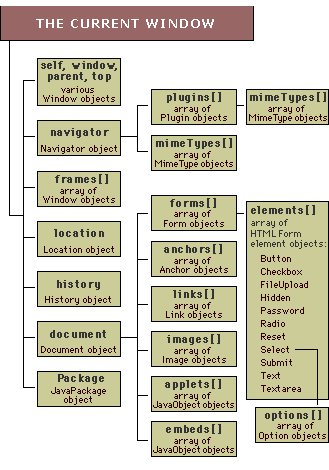

JavaScript
The very basics
The very basics
Javascript adds interactivity to webpages. It allows you to
Learning JavaScript means to learn a new language. You have to learn a specific vocabulary and how to combine it, its syntax.
For coding JavaScript you need nothing more than a plain text editor like Notepad (PC) or SimpleText (Mac). JavaScript can be either embedded directly into HTML or linked as external file. Its file extension is *.js
Let's start with a simple example:
<html>
<head>
<script
type="text/javascript">
alert("Hello world");
alert("Goodbye world");
</script>
</head>
<body>
<p>Normal
content</p>
</body>
</html>JavaScript is here embedded into the <head></head> of a HTML document. The rest of the HTML tag skeleton remains the same, just the <script></script> tag indicates the section reserved for JavaScript.
alert() is a specific predefined JavaScript function. When the HTML file is loaded into the browser it will open a small message box. The content of the message can be specified within quotes "Hello world". Text messages inside of JavaScript are called a "string" Try it: open the above example, save the source code to your local machine and edit its message!
Note: the place and order of the code is important. Browsers read the code from top to bottom and from left to right. Note how the browser displays first the "Hello world" message and then the "Goodbye world" message.
JavaScript code can get quite large and complex.Developers therefore have the possibility to save code in extra files. This also makes sense for recycling the same code across different HTML pages. Inside the external *.js file there is no need for the <script></script> tag
Let's create a new JavaScript file. Open your favorite editor and write:
alert("Hello world");Now, save it as "HelloWorld.js" After opening a HTML document, linking your JavaScript file is easy:
<html>
<head>
<script src="HelloWorld.js" type="text/javascript"></script>
</head>
<body>
<p>Normal
content</p>
</body>
</html>
The result will be exactly the same as the first example, but be sure to see the difference in the source code.
Because code is often very cryptic it is absolutely necessary to comment each line of code. Here is how you do it:
JavaScript ignores the rest of the line after //
and it also ignores anything that comes between /* ....*/ This type of comment can span several lines.
alert("Hello world"); //a one line comment
/*
This is a multiline comment block. Everything between the slashes will be ignored by JavaScript.
*/Scripts often execute many operations before something visible happens. Since the execution is a very intangible process where many errors can happen, extra tools are necessary to inspect the code "in action". A great tool - not just for JavaScript - but for inspecting also HTML and CSS is Firebug which you already know. It is available as add-on for Firefox. Mayor modern browsers such as Firefox, Opera, Chrome ship with a build-in Javascript console which informs you about errors during the scripts' execution.
A variable is basically a container that can hold different values during the execution of a program. To keep it simple at the start, variables in JavaScript come in three basic flavors: String, Number and Boolean. For the moment being let's note, that we put text into String variables, do math with Number variables, and Booleans are used to make decisions in the form true/false. Variables account (amongst other things) for the basic flexibility of a script.
How are variables created? The reserved word var indicates that we are about to define a variable for the first time. A variable has a short name which then gets a value assigned. For example:
var name = "Klaus";
var age = 27; Note: variable names should be short and descriptive. They are case sensitive, start with underscore or a letter, and do not contain whitespace!
The values of variables can change during the execution of a script. Of course, that's the whole point for using variables. A new value is easy to assign:
age = 28;
age = age + age; Either one assigns directly a new value to the variable, or as an alternative we can also operate with the variables - or rather its content. In the above example, since the content is a number, we can use mathematical operations on it and store the result. Literally, the second line above would read: The new value of the variable age is its current value (28) plus its current value (28), yielding 56. Also note that we don't use "var" anymore because we assume that the variable already has been defined previously in the code.
Strings represent text in scripting languages. In order to be treated as text, it has to be enclosed by single or double quotation marks.
var name = "Bond 007";
var city = "Tokyo and Berlin?"; You can tie several strings together with the "+" operator.
var movieTitle = name + " in " + city; The new value of the variable movieTitle then is "Bond 007 in Tokyo and Berlin?". Note how the " in " gets placed in between the two variables. Enclosing numbers into quotes also converts them into strings.
Note: Especially for beginners it is confusing to see the difference between the name of a variable and a string. See next example!
Both are words or texts but how they are treated by JavaScript is radically different. The following example tries to illustrate this:
alert(hello);
alert("hello"); In the first line, the alert() function will try to display
the content of the variable called hello. Since a variable with the name hello has not been defined, it will produce an error. The second line, is correct, since the quotation marks indicate that it is not a variable but a plain text which cannot contain values.
var hello = "message in a variable";
alert(hello); Now the above code works fine. The variable has been defined and a value has been assigned. The result is the same as if we would write directly:
alert("message in a variable"); JavaScript provides additional predefined functions to operate on strings such as converting a whole string to upperCase, counting the number of characters it contains, or reading the character at a certain position of the string. See the String W3C reference guide.
Number variables are straight forward. No quotation marks involved, just the standard mathematical operations:
var age = 28;
var weAreCounting = 0;
var x = -1;
A simple standard arithmetic operation could add a certain value to the variable x:
x = x + 10; Translated into language it means: the new value of x is the old value plus 10 (in our case it would be 9, if we define x with the value of -1).
JavaScript comes with some predefined mathematical functions such as sin, cos, sqrt, etc. All are available through the Math W3C reference guide.
Boolean variables can only have two values, either true or false, also often represented with the numeric values 1 for true and 0 for false. A simple example would be:
var isSunday = false // or true; Boolean variables are important to make decisions in the execution of the program (see JavaScript "conditionals" further down)
Arrays store several values under one name. Imagine a shopping list that would contain several items. Each value is accessible by its position in the list, called index. Arrays can hold Strings, numbers, boolean, and other type of objects. Think of arrays as mini-database, or mini-tables where each row is numbered.
To define an empty array:
var shoppingList = new Array(); To define an array with three initial values, in this case with strings:
var shoppingList = new Array("eggs", "butter",
"ham");As an alternative, arrays can be populated by assigning specific positions (indicated by the index) a value:
var shoppingList = new Array();
shoppingList[0] = "eggs";
shoppingList[1] = "butter";
shoppingList[2] = "ham"; There is no direct limit of how many elements you can add to your array.
Individual values can be accessed by specifying the position where they are stored in the array.
alert(shoppingList[0]); //will produce "eggs"
alert(shoppingList[2]); //will produce "ham"Note: the first position in the array has the index "0" (!) and not "1" as common sense would suggest.
Modifying existing values is as simple as assigning a new value at the desired position of the array:
shoppingList[2] = "apples"; This would overwrite the value of "ham" with "apples".
Javascript provides furthermore a whole set of predefined functions to be used with arrays such as sorting the values, reversing the order of the array, splitting it or joining two arrays among other things. Check out the full array reference at W3C schools.
Conditional statements are a fundamental part of each scripting and programming language. They allow to make decisions in a script. There are two statements, the if...else constructs and switch... case.
The general syntax of this conditional statement looks as follows:
if (condition){
//code
to be executed if condition is met
}Let's say we have a variable called age and we want to check if it matches a certain value. The code would look like this:
if (age == 18) {
//code to executed if the variable age has value 18.
}
Note: how we use a doubled "==" sign to test for equality. A common mistake is to use a single "=" equal sign instead which does not test for equality but rather assigns a value to the variable!
Many times we want to single out one specific case and treat al the rest. This is achieved with the if...else construct
if (condition) {
//code to be executed if condition is met
} else {
//code to be execute if condition is not met
}An example would be to check for the age and treat the users differently depending if they are over 18 or not:
if (age > 18 ) {
alert("you are full age");
} else {
alert("you are too young, below 18");
}Several conditions can be checked by adding further else if constructs:
if (condition1) {
//code to be executed if condition1 is met
} else if (condition2) {
//code to be execute if condition2 is not met
} else if (condition3){
//code to be execute if condition3 is not met
} else {
//code to be execute if none of the above
conditions is to be met.
}Checking a condition against several cases can be a bit cumbersome with the if..else if construct. An easier way consists of using the switch statement:
switch (condition){
case 1:
//do something
break;
case 2:
//do something else
break;
case 3:
//do something other
break;
default:
//if nothing of the above applies.
}
The switch statement compares the condition against the numbers 1,2,3 in the above case.
Looping constructs execute a certain section of code a certain number of times. Several loop constructs exist in JavaScript: the for loop, the while loop, and for...in loop. Imagine for example an array of 100 elements and the need to compare each entry against a certain value. A for-loop provides the solution.
The for-construct is used if the number of iterations is known. The general syntax of a for-loop looks like follows:
for (var startValue; endCondition; increment){
//code
to be executed each iteration
}Let's say we have an array with 10 names and need to display each value:
for (var i=0; i<10; i++) {
//do something here
}First, we define the start value of our counter var i=0; Many times this variable is just called "i". We set it to 0 to start at the first entry of a fictive array. Next, we check if "i" is still smaller than 10, the total length of our array; i<10; in order to determine if the loop has finished. And finally we increment "i" for each iteration. (Writing i++ is actually the same as writing i=i+1;) The first time we execute the loop, "i" has the value of "0". The second time "i" has the value of "1". Since it is still smaller than "10" it will execute a third time, and the value of "i" increments to "3", and so forth until i reaches the value of "9".
var names = new Array ("ann", "klaus", "frank", "sara",
"tomy", "jen");
for (var i=0; i<names.length; i++) {
document.write("names[" + i + "] = " + names[i] + " <br/>");
}There are one thing to note: first, the condition to stop the loop now incorporates in a convenient way the size of the array. Instead of writing "6" manually, the array.length property returns automatically the size of the array. This means, even after we have added or deleted elements to the array, the loop always will work correctly, iterating over the correct number of elements.
A second looping construct is while. It will be executed while a certain condition is met. Be careful however, if the condition is always true the while construct tends to freeze your application! It will be executed at least once even if the initial condition is not true.
while (condition) {
//execute code
}In the following example, we use the Math.random() function to generate random numbers between 1 and 10000. This process will continue as long as it takes to hit the number 3452. Testing the application several times should take different timespans.
var rnd = 0;
while (rnd != 3452) {
rnd = Math.round(Math.random()*10000);
}Finally, there is the for...in statement. This loop lets you iterate through a series of elements/properties even you are not sure how to reference them. The general syntax is:
for (variable in object){
//do something
}For example, in order to loop through an array where the keys are not numeric but strings is only possible with the for...in construct:
var prices = new Array();
prices["milk"] = 2.40;
prices["butter"] = 1.20;
prices["cheese"] = 0.50;
for (var x in prices){
document.write("The price of " + x + " is " + prices[x] + "<br/>");
}
The break statement enables to jump out of a loop before the actual ending condition has been met.
var i;
for (i=10; i>0; i--){
if (i == 6) {
break;
}
}
The continue statement skips one loop.
for (var i=5; i>0; i--){
if (i == 3) {
continue;
}
document.write("i: " + i + "<br/>");
}
A so called "function" in JavaScript allows to bundle several commands into one. They give you the possibility to build modular code or blocks of several tasks that have to be performed again and again. In order for a function to be executed, it has to be " called". A function that is never "called" will have no effect.
A function starts with the keyword "function", has a "name" and a "body" of code that will be executed when it is called. Its general syntax is:
function myFunctionName([var1, var2, ...]){
//code
to be executed once the function has been called
}Functions can also receive optional values (see below). A simple function would display a message:
function showMessage(){
alert("hello world");
}
Upon calling this function, the well known alert() message would pop up. Including the alert() message directly into the script outside of a function would execute it when the file is loaded. Now, it's inactive until we explicitly execute it, by clicking on a link for example.
How do you trigger a function, i.e. how do you execute the code that it contains? Simply write the name by which it is defined! You can call a function as many times as you like from almost every position in your code.
function showMessage(){
alert("hello world");
}
showMessage(); //function call. Note: that the function call comes after the function has been defined. Otherwise it would produce an error.
A function can be triggered from HTML:
<a href="javascript:showMessage();">click here to see
message</a>Functions can receive values. For example, we need a function that adds two numbers together:
function sum (a, b) {
var result = a + b;
alert("The result is " + result);
}
sum(5, 7);The function accepts now two values in the form of variables called "a" and "b". Internally, inside the body of the function, it adds up both values and prints the result.
The way the function is called now changes slightly as well: the function call passes now the actual numeric values (5 and 7) to the function.
Functions can return values as well. This allows to receive the result of whatever has been going on inside of it.
function sum (a, b) {
var result = a + b;
return result;
}
var r1 = sum (49,2);
var r2 = sum (1,1);
alert(r1);
alert(r2);
Since the function returns the result, it can be stored in a variable, here called "r1". The result of another, second operation will be stored in "r2".
Objects in JavaScript - and in other programming languages - are a way to organize required functionalities. An object can be anything: a car, a geometrical shape, a person.... it does not matter. Objects in programming represent these "objects" with their main features and functionalities.
A simple example: think of a geometrical shape such as a circle. A circle has a specific radius and a typical operation would consists of calculating its surface. The corresponding circle object in JavaScript would then bundle these two features: the radius gets stored as a property and the area function as a method belonging to the circle
An instance of an objects is created with the keyword "new":
var circle = new Object(); The properties of an object are "attached" with a dot "." In other words, the radius is a variable that "belongs" to a circle. Here it is set to 12 units.
circle.radius = 12; In the same way, functions specific to the circle are attached with a "." dot. Imagine a function that returns the area of the circle:
//define the function
circle.area = function (){
return Math.PI * this.radius *
this.radius;
}
//call it
var a = circle.area();
JavaScript provides many predefine objects. Wellknown examples would be the Date object, or the Math and String object. Consult the corresponding JavaScript reference guide to learn which properties and methods are supported by these objects. In general, the HTML DOM elements are objects which.
JavaScript is a object oriented programming (OOP) language. Apart from the predefined objects (String, Math, Date, etc.) developers can create their own custom objects. These always involves two logical steps: first, a given object and its functionalities are defined. Second, these objects are used by creating concrete instances of it. An example will make these two steps clearer.
1) Imagine you want to create an application for your family. In order to get organized, you would define an object to represent each person or family member. First you define the properties or the information that each person will have. This is the so-called "constructor" function:
function person (name, age, address){
this._name = name;
this._age = age;
this._address = address;
}Our person object has now three properties, _name, _age, _address (others are possible). The underscore "_" is introduced to distinguish the properties of the object from the parameters passed to the function.
2) Now, for using this object it is necessary to create an instance of it. This is the second step after defining its structure. A family has many different members and for each member a new person-instance is created which allows to store the data associated with this specific person (note, the "this" keyword in the constructor).
var dad = new person("jim", 56, "town x");
var grandma = new person("sally", 90, "village y");The values of the properties of each person are now accessible throught he dot "." syntax. Since "grandma" is an instance of "person", it has automatically all the properties and functions defined for this object:
alert(dad._name);
alert(grandma._age);In a similar fashion, an object can have specific methods. A method that belongs to an object is (1) referenced in the constructor and then defined outside of it. We add to the constructor a new line:
function person (name, age, address){
this._name = name;
this._age = age;
this._address = address;
this.describe = _describe;
}
function _describe(){
return "This is " + this._name + "!!.
I'm
" + this._age + " years old.";
}Now it is possible to (2) call the describe function on any person instance
dad.describe();
grandma.describe();Which will return the description of this person, to be displayed with the alert() message for example. Object instances provide here a way to keep all information and functionalities organized.
The Document Object Model (DOM) provides a tree like model to access and manipulate the browser, HTML documents and their HTML elements. For example, through the DOM it is possible to
The DOM is a standard way to represent the HTML page in a hierarchical, tree like manner. Combined with JavaScript it provides developers with a powerful way to build dynamic HTML pages.
DOM represents the HTML document as a tree. Each HTML element (leaf) is identified by the path that leads from the root (the window) to the specific element (image, form, etc.). The graphic below describes the hierarchy between the most standard elements.

The window contains besides the information about the browser, the URL of the current page, the browsing history and others, the actual HTML document. Each document can contain several images, anchors, forms all of which are represented in arrays (note the array "[]" brackets).
Accessing a specific element in a HTML document is as easy as writing down the path that leads to it. A simple example:
<html>
<head><title></title></head>
<body>
<img src="goose.gif" name="pic1" />
<img src="goose.gif" name="pic2" />
</body>
</html> The above HTML file contains two identical images but with different names ("pic1" and "pic2"). In order to access the images, the DOM provides the following path:
window.document.images["pic1"];
window.document.images["pic2"];Read: inside the window we have a HTML document which contains several images stored in an array. The first image is identified by "pic1", the second with "pic2".
Another example with form elements:
<html>
<head><title></title></head>
<body>
<form name="test">
<input type="text" name="zip"
/>
<select name="birthdate">
<option value="2008">Year 2008</option>
<option value="2009">Year 2009</option>
</select>
<input
name="sex" type="radio" value="male" />
<input
name="sex" type="radio" value="female"/>
</form>
</body>
</html> The different HTML elements inside the form can be accessed by writing down the DOM path:
window.document.forms["test"].elements["zip"];
window.document.forms["test"].elements["birthdate"];
window.document.forms["test"].elements["sex"][0]
The radio button object has itself an array of options. Thus, the "male" field is accessed with index [0] and the female field with index [0].
HTML elements can be manipulated. Each HTML object and element has its specific properties and methods. These are all referenced in the W3C HTML DOM reference guide. The properties tell you what actions are possible on these elements and which information is available. Some examples:
1) To return to the first example: images have a ".src" property to change the actual source image file. Changing the source will change the visible image:
window.document.images["pic1"].src
= "cow.gif";
2) With forms it is possible to check the user input before sending it off:
var zip
=
document.forms["test"].elements["zip"].value;
var birthdate =
document.forms["test"].elements["birthdate"].value
var male =
document.forms["test"].elements["sex"][0].checked
if (isNaN(zip)){
alert("Please provide zip code");
}isNaN() is a JavaScript function to test if a given value is a number or not. If users did not fill out a number into the zip field isNaN() will return true and the alert() message will be displayed.
Note, that the full path to the HTML elements can actually be shortened. Since the script always refers to the current window it is embedded in, we can just erase the "window" of each path. The script "knows" that the active window is meant.
3) As a third example, all CSS properties can be read/changed through the DOM style property.
In the following example, an array stores different gray color values. The changeColor function gets called from within the HTML section of the document. It receives not an actual color value but the index to a certain color value in the array which then gets assigned to the CSS background-color property:
<script type="text/javascript">
var colors =
["#ffff33","#030303","#151515","#272727","#383838","#4a4a4a"];
function changeColor(which){
document.body.style.backgroundColor
=
colors[which];
}
</script>
...
<body>
<a href="" onmouseover="changeColor(2)">change
background color</a>
</body>
Note: all CSS properties that use a dash "-" are converted using the CamelCase system since the dash would be interpreted by JavaScript as the mathematical "-" sign and cause an error. The CSS property "background-color" becomes the DOM equivalent "backgroundColor", or "font-size" becomes "fontSize", "font-family" -> "fontFamily", etc.
Writing down the whole path for accessing certain elements can get quite cumbersome. Luckily there exist several methods to access DOM elements in a more direct manner.
Each HTML element with its ID set can be accessed directly. In the following example, the getElementById() function provides access to the specified layer and resizes it to 10x10px.
...
<body>
<div id="one"></div>
<script>
document.getElementById("one").style.width
= "10px";
document.getElementById("one").style.height
= "10px";
</script>
</body>
...
The DOM style property represents all CSS properties of an HTML element. In our case, "width" and "height".
getElementsByName() provides an array of all HTML elements with the same "name" attribute set. For example, all paragraphs named "cool" will be transformed. For the following code, the number of available paragraphs gets saved into the variable "n" which then is used to loop over all items returned by getElementsByName().
<body>
<p name="cool">First
paragraph</a>
<p name="cool">Second
paragraph</a>
<script>
var n = document.getElementsByName("cool").length;
for (var i=0; i<n; i++){
document.getElementsByName("cool").item(i).style.fontSize
= "40px"
}
</script>
...
getElementsByTagName() provides a convenient way to access all HTML tags of a certain type. This makes it easy for example to change the look of all anchors:
<body>
<a href="#">link 1</a>
<a href="#">link 2</a>
<script>
var n = document.getElementsByTagName("a").length
for (var i=0; i<n; i++){
document.getElementsByTagName("a").item(i).style.backgroundColor
= "black";
}
</script>
...